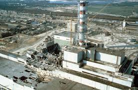

La série d’HBO a connu un succès fulgurant et a provoqué un regain d’intérêt des spectateurs pour cette catastrophe écologique et sanitaire. Son créateur s’est confié sur une scène trop dure à montrer.
L’énorme succès de la série Chernobyl était difficile à prévoir, mais les spectateurs ne s’y sont pas trompés. Comme vous pouvez le découvrir dans notre critique, ce show en cinq épisodes retranscrit de façon précise et réaliste comment s’est déroulé l’un des pires incidents nucléaires de l’histoire.
nterviewé dans les colonnes d’Entertainment Weekly, Craig Mazin, son créateur, s’est confié sur son travail. C’est ainsi que nous avons pu apprendre qu’une scène entière avait été retirée, car jugée « trop glauque » pour les spectateurs.
Il s’agissait d’une partie de l’épisode quatre. (Spoilers) Dans ce dernier, les liquidateurs sont sommés de ratisser les environs de la zone afin d’abattre les animaux, notamment les chiens et les chats devenus hautement radioactifs à leurs dépens. Un ordre qui a véritablement été donné pour éviter que des animaux ne parcourent des kilomètres et se retrouve en liberté dans des endroits habités.
La série de podcast nommé « The Chernobyl Podcast » permet d’en apprendre un peu plus. Mazin explique que la scène en question montre un chien en souffrance, qui va être enterré vivant avec du ciment. Mais les liquidateurs ne peuvent pas l’abattre car ils n’ont plus de munitions. Il ne précise pas comment ils opèrent mais on imagine que la séquence aurait choqué les plus sensibles. « Cela m’a semblé abusif, presque malsain de montrer ça. Il y a une ligne très étrange entre le fait de vouloir montrer aux gens quelque chose qui est arrivé, qu’ils doivent voir pour comprendre, et aller trop loin. Cette limite est différente pour chacun. Mais à en juger par la réaction après la diffusion de l’épisode 4, il semble que nous ayons eu raison. Si nous avions gardé cette scène, je pense que beaucoup de gens auraient simplement mal réagi, en disant : « Vous savez quoi ? Vous êtes juste cruels là en fait ! » Un choix qui appartient à Mazin, et qu’il faut respecter. Auriez-vous préféré qu’il conserve cette scène ?